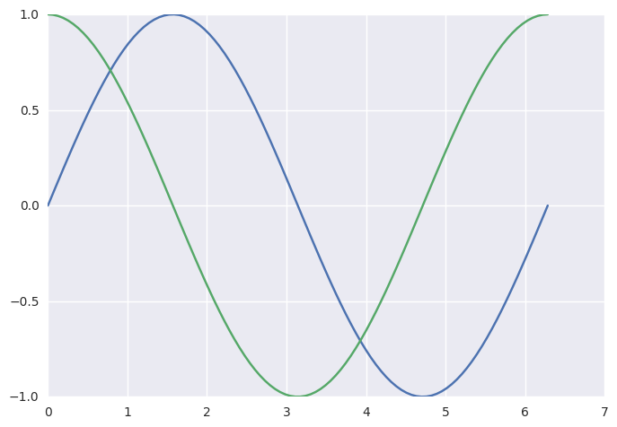

I tried the basic linear regression example from this article. I was quite surprised by this line:
train_step = tf.train.GradientDescentOptimizer(0.0000001).minimize(cost)
because it didn't seem to require me to tell the GradientDescentOptimizer what the first derivative of my cost function is. Previously when I've used gradient descent, I've had to manually specify what the gradients with respect to my parameters as well as the cost function.
A bit of reading indicates that TensorFlow can compute gradients for a given computation graph. Let's have a look at a basic example.
%matplotlib inline
import tensorflow as tf
import numpy as np
from math import pi
import matplotlib.pyplot as mp
import seaborn
seaborn.set()
We'll compute the derivative of the sin function over the range 0 to 2*pi
x_=np.linspace(0,pi*2,100)
I'm still learning the relationship between Python variables and TensorFlow placeholders.
Here x_ and y_ are Python variables, x and y are TensorFlow tensors
x=tf.placeholder(tf.float32)
y=tf.sin(x)
x
<tf.Tensor 'Placeholder_3:0' shape=<unknown> dtype=float32>
y
<tf.Tensor 'Sin_3:0' shape=<unknown> dtype=float32>
Now we ask TensorFlow to compute both the sin function AND the first derivative.
with tf.Session() as session:
feed_dict = {x:x_}
y_ = session.run(y,feed_dict=feed_dict)
out = session.run(tf.gradients(y,x),feed_dict=feed_dict)
gradient=out[0]
mp.plot(x_,y_)
mp.plot(x_,gradient)

Note that I haven't had to declare anywhere that the first derivative of sine(x) is cosine(x). TensorFlow seems to be able to figure that out analytically, which is pretty cool.